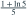
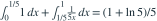

X、Y 独立服从  。 等于多少？
。 等于多少？
。 等于多少？- A

- B

- C
- D
我已思考，展开答案与解析
正确答案：A
- 按 X 的取值分段：当 时，Y 的任何可能值都满足条件；当 时，需要 。
- 所以概率为

。
易错提醒乘积约束对应双曲线区域，不能把事件当作独立区间限制。
南审 813 · 2026 · 一·1(2)，PDF第1页
从大题拆分考点并重新编写选项；数值或设问有调整。
查看参考来源
。 等于多少？

。南审 813 · 2026 · 一·1(2)，PDF第1页
从大题拆分考点并重新编写选项；数值或设问有调整。
查看参考来源